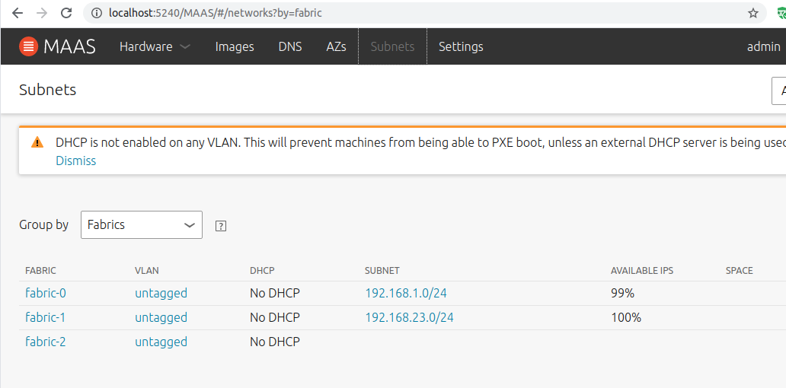
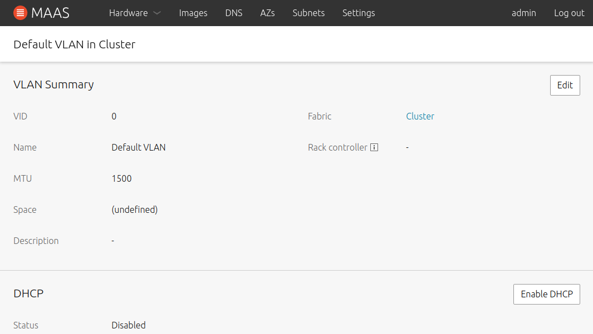
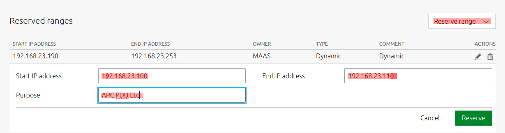
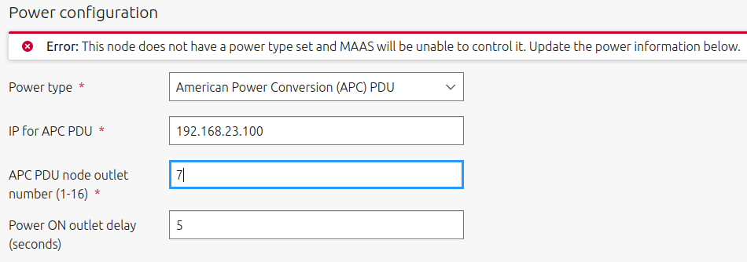
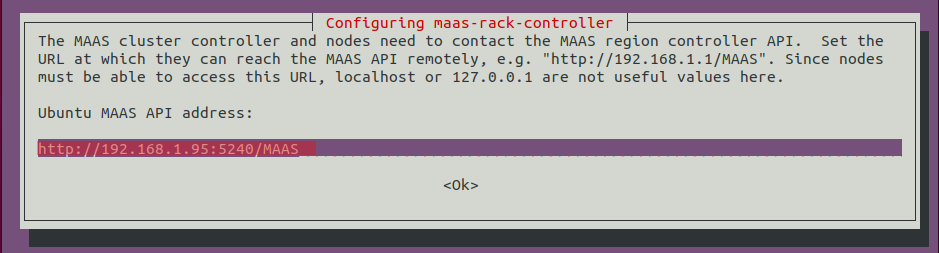
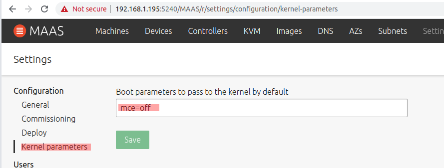
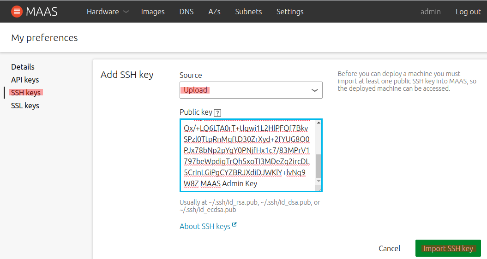

> mkdir bitbucket
> cd bitbucket/
> git clone https://vamsijuvvigunta@bitbucket.org/vamsijuvvigunta/tools.git
> git clone https://vamsijuvvigunta@bitbucket.org/vamsijuvvigunta/infrastructure.git
A basic maas server will have to be setup. I have chosen a small 4-core i7 NUC for this. Will see if it suffices. It needs to handle multiple roles, some of which need their own nodes/containers. MAAS master is the important one here, MAAS nodes can change as needed.
Hardware checklist The MAAS Master needs two interfaces (one via USB in my case) which define two fabrics: one vlan each
Update USB Names
Always good to do a
sudo update-usbidssudo apt update usb.idsfollowed by lsusb to make sure the vendor IDs are updated to a recognizeable string.
Drivers for USB ethernet
Usually not needed. If
ifconfig -adoes not show the two interfaces, replug the USB and it will show.
makemake installsudo depmod -asudo update-initramfs -uifconfig -a shows it and it matches the name in the netplan config.Workaround for TR40
no media detected) when machine boots up after bios boot priority is configured. However, when I use F11 and choose the PXE Aquantica 10G, it works correctly. so this is the sequence for commissioning and deployment. Once that is done, PXE is no longer needed. (Update: Nov 2020, updated to latest BIOS and with 20.04, simply works!)Networking Roles
Note that users and their SSH keys must be imported before deployment for the keys to make it to the deployed machines. The key of the owner who requests the machine from MAAS are deployed to the machine as the ubuntu user
sudo cp configs/01-network-manager-all.yaml /etc/netplansudo netplan apply to apply it
sudo vi /etc/sysctl.conf and uncomment #net.ipv4.ip_forward=1sudo sysctl -p/etcchmod a+x /etc/rc.localtcpdumpping 8.8.8.8 and ensure it works. You can see the ping packets come through on the maas node.See the MAAS concepts and terms, our single MAAS master needs to behave like a
sudo snap install maas --channel=2.9/stable
sudo snap install maas-test-db
sudo maas init region+rack
vamsi@MAAS:/snap/maas/current$ sudo maas init region+rack
Database URI [default=maas-test-db:///]:
MAAS URL [default=http://192.168.1.195:5240/MAAS]:
MAAS has been set up.
If you want to configure external authentication or use
MAAS with Canonical RBAC, please run
sudo maas configauth
To create admins when not using external authentication, run
sudo maas createadmin
Per output above, run sudo maas createadmin
vamsi@MAAS:/snap/maas/current$ sudo maas createadmin
Username: admin
Password: maasAdmin
Again: maasAdmin
Email: vamsi.juvvigunta@gmail.com
Import SSH keys [] (lp:user-id or gh:user-id):
8.8.8.8 (192.168.1.1 also ?)~/.ssh/id_rsa.pub when asked for SSH key. Important to ssh into MAAS nodes



Cluster fabric (192.168.23.0/24)Reserve Range and go from there.
Power Type192.168.23.100 (statically assigned in the PDU)
preconfigured for juju controller
newreadyProcess
Snap works great in most cases as it is an overlay that does not edit the existing filesystem. However, after using it, I needed to make some edits to the apc.py power driver and realized that /snap is a ro filesystem. Have to wait for a PR to go through, packaging and all that. Simpler to use a standard install (not available for 2.9 and above I think but certainly available for 2.7)
Update: 2.9 as of Nov 2020 has the apc power drivers fixed
> sudo snap install maas --channel=2.7
> sudo maas init
Mode (all/region+rack/region/rack/none) [default=all]?
MAAS URL [default=http://192.168.1.195:5240/MAAS]:
Create first admin account
Username: admin
Password: maasAdmin
Again: maasAdmin
Email: vamsi.juvvigunta@gmail.com
Import SSH keys [] (lp:user-id or gh:user-id):
vamsi@maas:~$ sudo apt-add-repository -yu ppa:maas/2.7
vamsi@maas:~$ sudo apt install maas
vamsi@maas:~$ sudo maas init
vamsi@maas:~$ sudo maas init
Create first admin account
Username: admin
Password:
Again:
Email: vamsi.juvvigunta@gmail.com
Import SSH keys [] (lp:user-id or gh:user-id):
Update: As of Nov 2020, on 20.04 even the 2.7 release installs as a snap! Thankfully MAAS 2.9 beta as a snap works!
Apt install gets an older version with some issues. During install, it ends up listing the MAAS url as http://localhost:5240/MAAS. This gets passed on to the nodes during deployment and they cannot hit it meaningfully. Needs to be updated to the actual IP.
Can also be checked from cat /etc/maas/rackd.conf
sudo dpkg-reconfigure maas-rack-controller

I realized after a lot of pain that Ubuntu 18.04 simply does not boot on a Threadripper TR40 board unless mce=off is supplied as kernel parameters. This was very frustrating initially as it looked like a USB device error.
Not needed with latest Ubuntu 20.04 as it supports the TRX40 natively.
Under Settings/Kernel Parameters, set the approp params.

Note: You can generate as many users as you want and generate keys for all of them. However, note that only users with Admin privileges can acquire/release machines. Usually a nuisance for the home lab. Stick with Admin is fine.
Adminvamsi@maas:/etc/default$ ssh-keygen -C "MAAS Admin Key"
Generating public/private rsa key pair.
Enter file in which to save the key (/home/vamsi/.ssh/id_rsa): /home/vamsi/.ssh/maas_admin_id_rsa
Enter passphrase (empty for no passphrase):
Enter same passphrase again:
Your identification has been saved in /home/vamsi/.ssh/maas_admin_id_rsa.
Your public key has been saved in /home/vamsi/.ssh/maas_admin_id_rsa.pub.
The key fingerprint is:
SHA256:WHmQe3vyvIVuVlsEoC+4vCRr7+R35geNVGftj22/J4o MAAS Admin Key
The key's randomart image is:
+---[RSA 2048]----+
| .. .. .|
| .o . o +|
| o.o . = |
| o.o... o|
| . S..o.o +.|
| . .o.+.+ =|
| . = =.o.+.|
| .* ..oB.+ o|
| ..o=.E*=+ oo|
+----[SHA256]-----+



192.168.1.195 is the maas regiond address. nameservers:
+ addresses: [192.168.1.195, 8.8.8.8]
- addresses: [8.8.8.8, 192.168.1.195]
search: [maas]
ssh ubuntu@box_name.maas
From the MAAS perspective, every time the machine deploys, cloud-init imports the SSH key from MAAS allowing the user to SSH in. This is the current behavior in all versions of MAAS.
Note
~/.ssh/id_rsa and not another specially named file./tmp/user_data.sh.*/bin/maas-run-remote-scripts --no-download /tmp/user_data.sh.* fails with the exact same error!mce=off ofcourse. Simplest I think.Switched back to 18.04
Only because I had trashed the 18.04 config with VLAN setups and wanted to revert to clean config
Switching to 20.04
Under snap, the notable logs are at /var/snap/maas/common/logs/maas.log
After spending a lot of time trying to figure things out, thought I should upgrade maas and see if it fixes the APC issue. Clearly, it is able to power on/off, just not query and there are no log items either!
https://maas.io/docs/install-from-a-snap#heading--upgrade-maas-snap
sudo snap refresh --channel=2.8 maas
I knew going in that MAAS could not automatically power on/off nodes unless they have a BMC (Baseband Controller) built in. This typically implies IMPI but Intel AMT would work as well. The two Lenovo T93P Micros I have come with vPro/AMT but the new TR40 board does not and neither do my existing i7 PCs or Skullcanyon NUCs. Did some research on how to work around these.
Links
pingSo it turns out that I might not need to throw my expensive TR40 board out or look only for IMPI server boards. APC PDU may be good enough. Turns out you have to avoid the ones marked basic since they do not have any snmp control ports.
No videos of how the APC thing would actually work. I understand that
I installed MAAS as a snap and cycling through available resources, turns out that
/etc/maas/power/templates does not exist/usr/lib/python/dist-packages/provisioningserver/drivers/power does not exist/snap/maas/lib/current/lib/python3.6/site-packages/provisioningserver does existThere is a drivers/power/apc.py in there with these relevant functions.
class APCPowerDriver(PowerDriver):
....
def power_on(self, system_id, context):
"""Power on Apc outlet."""
if self.power_query(system_id, context) == "on":
self.power_off(system_id, context)
sleep(float(context["power_on_delay"]))
self.run_process(
"snmpset",
*_get_common_args(
context["power_address"], context["node_outlet"]
),
"i",
"1",
)
def power_off(self, system_id, context):
"""Power off APC outlet."""
self.run_process(
"snmpset",
*_get_common_args(
context["power_address"], context["node_outlet"]
),
"i",
"2",
)
def power_query(self, system_id, context):
"""Power query APC outlet."""
power_state = self.run_process(
"snmpget",
*_get_common_args(
context["power_address"], context["node_outlet"]
),
)
if power_state == APCState.OFF:
return "off"
elif power_state == APCState.ON:
return "on"
else:
raise PowerActionError(
"APC Power Driver retrieved unknown power state: %r"
% power_state
)
From Power Off not working with WOL, It turns out MAAS uses ssh -o UserKnownHostsFile=/dev/null -o StrictHostKeyChecking=no ubuntu@${ip_address} -C "echo 'sleep 2 && sudo /sbin/poweroff -f' | at now" to power a node down but only if it knows that the machine is on. This seems to be the sticking point with WOL.
Since the apc.py driver implements a proper power_query, it should allow MAAS to shut it down gracefully.
Lots of variables when choosing the right APC PDU
I purchased a APC AP7900 Switched PDU on eBay for 115$ which ticked all the boxes. If it works out, cheap way to work with non IPMI boxes (can power 8 of em with one strip). You just need to verify that the bios allows you to set a Start on Power On flag.
⚠️ The APC PDU Switable models do have a separate serial port (smaller RJ-12 port) which is needed to reset the unit's password. If you do choose to do this, you will need an approp serial cable: The AP7900 model (and bunch of others) use APC PDU Serial Cable 940-0144 DB9 to RJ12. Amazon or eBay.
The unit I got from eBay looks to be in great condition. Turned it on and randomly long pressed the grey button and after some flashy it listed the IP. Some 172.xx thing. Definitely need the serial cable to reset it. Will see how it goes.
Turns out the snap install is a pain. You cannot edit it, the launchpad location for mass code does not have any instructions on how to build etc. It seems simplest to switch to the 2.7 non-snap edition (since that is all I need) and update apc and graceful shutdown myself as a patch.
2.8 Has this nuisance about a separate postgres db and offers no advantages for my use-case. So just stick to 2.7 for now.
sudo apt-add-repository -yu ppa:maas/2.7
sudo apt install maas
/usr/lib/python3/dist-packages/provisioningserver/drivers/power/apc.py
class APCPowerDriver(PowerDriver):
name = "apc"
chassis = True
description = "American Power Conversion (APC) PDU"
settings = [
make_setting_field("power_address", "IP for APC PDU", required=True),
make_setting_field(
"node_outlet",
"APC PDU node outlet number (1-16)",
scope=SETTING_SCOPE.NODE,
required=True,
),
make_setting_field(
"power_on_delay", "Power ON outlet delay (seconds)", default="5"
),
]
ip_extractor = make_ip_extractor("power_address")
- queryable = False
+ queryable = True